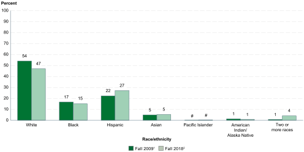
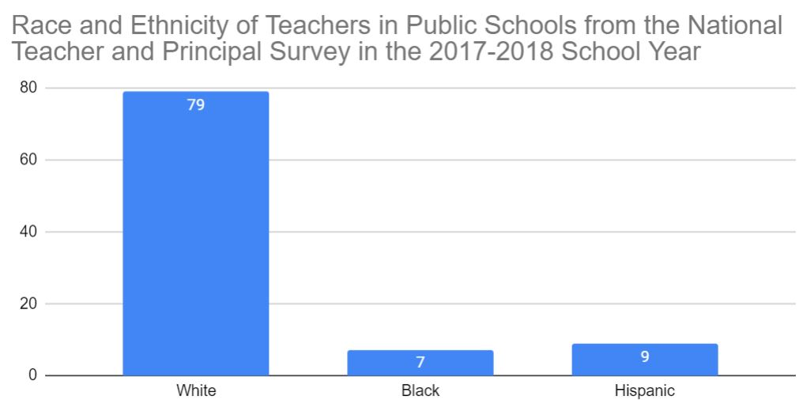
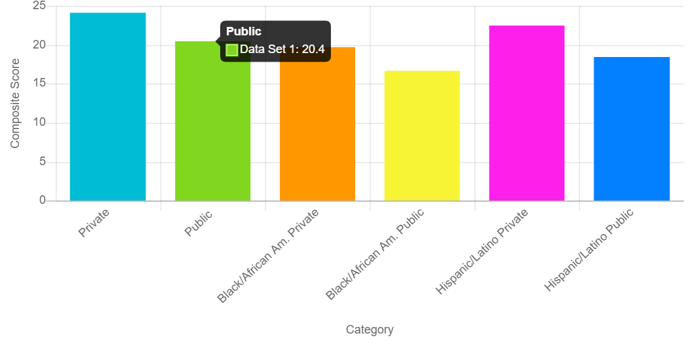
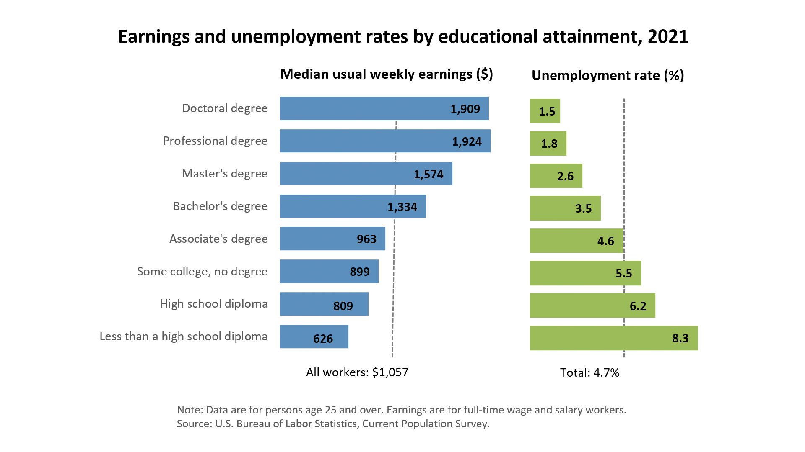

A Journey through Wealth Inequality in Education
Let's predict the future of the student below based on which secondary school they attend.
First of all, which school is the student more likely to attend based on their economic background? Click on the tabs to find out.
Statistics of Type Enrollment
A student is less likely to enroll in a private school.
Source: Public and Private, n.d.
The graph above reveals the percentage of elementary and secondary students enrolled in private schools from Fall 1999 through fall 2017.
Economic Background Effect on Type Enrollment
That likeliness can increase or decrease with economic background.
The graph above reveals the percentage of students in a economic background demographic that are enrolled in elementary Private Schools from 1965-2015.
Note:
According to a study titled "Long-Term Trends in Private School Enrollments by Family Income," trends in private secondary school enrollment are similar. However, there has been a consistently lower percentage of high school students who attend private school. This difference was calculated at around four percentage points at the start of the last half-century, but it has declined to one.
Why do these differences matter?
US Public School
What are key characteristics of public schools?
(Click on the tabs below to see)
Public schools tend to be more diverse racially and ethnically as well as economically.
The graph above shows the percentage distribution of students enrolled in public elementary and secondary schools, by race/ethnicity for Fall 2009 and fall 2018. It is important to note that after around ten years, the percentage of white students enrolled in public schools in comparison to other racial groups fell to less than half.
Another study from 2017 revealed that students from low-income families made up more than 50% of the population of public schools.
Racial and ethnic diversity can be a beneficial quality for exposing students to different cultures and backgrounds. In addition, a diverse enivonment encourages teachers and administrators to be more sensitive to different cultural backgrounds and interactions between individuals. However, programs surrounding these interactions need to be improved.
Public school teachers tend to be slightly more diverse than private schools.
While public school teachers are more diverse than private school teachers, teachers on average still tend to be disproportionately white. Depending on where a student is attending a public school, they may have less role models with similar backgrounds.
Public schools also tend to have larger teacher student ratios. The national average is around 16.2 students per teacher (2021). This means that class sizes are larger, and students get less individualized instruction.
Public school teachers are also more likely to have achieved a higher degree of education than private school teachers. This is due to state-related requirements for public school teachers to have a certain level of certification.
The rigor of the school is evaluated based on course requirements including 4 years of English, 3 years of social studies, science, and mathematics, and .5 years of computer science. Public schools are less likely to have rigorous academic programs according to the National Commission on Education and the Economy. On top of that, public school students are less likely to have taken advanced mathematics and science classes.
Public school students have access to government mandated special support services. These services apply to people with mental and physically disabilities.
In terms of test scores, private schools tend to outperform public schools. A study showed that high school graduates who went to a public school, scored on average 4 points lower than their private school counterparts. 
Average ACT Test Scores of Students Based on Race Demographic and Type of High School in 2018
According to the Highschool Longitudinal Study of 2009 ninth graders who had enrolled in postsecondary education by 2016, 70.6% of the public school students surveyed attended postsecondary school. However, they found that only 48.7% were still enrolled in their program.
US Private School
What are key characteristics of private schools?
(Click on the tabs below to see)
Private schools tend to be less diverse racially, ethnically, and economically.

This graph shows data from the National Center for Education Statistics that calculated the overall diversity of the 5.7 million students enrolled in elementary and secondary private schools in 2017 (10% of the US student population).
In addition, the study found that students who hail from low-income families were 9% of the population of students in private schools in 2017.
These numbers further reveal that private schools disproportionately serve white students who come from higher income backgrounds. Another disadvatange of less diversity is that the makeup of the private schools do not reflect the true diversity of the US and students have less exposure to people who come from different backgrounds.
Private school teachers tend to be less diverse.

Less diversity in teachers means that certain students have less role models that come from similar backgrounds.
However, the student teacher ratio in private schools is 11.9 students per teacher (2021). This means that students at private schools are more likely to have smaller class sizes and more individualized instruction.
Private school teachers are less likely to have achieved a masters degree or higher.
The rigor of the school is evaluated based on course requirements including 4 years of English, 3 years of social studies, science, and mathematics, and .5 years of computer science. Private schools are more likely to have rigorous academic programs according to the National Commission on Education and the Economy. On top of that, private school students are more likely to have taken advanced mathematics and science classes. In addition, private school teachers have more freedom to teach in different ways and often have access to a more specialized curriculum.
Private school students are not required to have the same services for individuals with disabilities that public schools have. According to The Individuals with Disabilities Education Act from 2004 students enrolled in private institutions do not have the same legal rights to special education services and may not receive as many services as the students enrolled in public school.
Private school students tend to score higher on standardized test scores.
According to the Highschool Longitudinal Study of 2009 ninth graders who had enrolled in postsecondary education by 2016, of the private school students surveyed, 95.8% enrolled in postsecondary school, and 82.3% were still enrolled.
While there is no exact data on current earnings of students that have graduated from private schools, there is research on level of education attained in relation to overall earning, and since private school students are more likely to be successful in terms of postsecondary education enrollment, the data likely reflects the earning they will achieve (at least for postsecondary education). A study conducted by the U.S. Bureau of Labor Statistics in 2021 found that there was a positive association with level of education achieved and salary.
- The data reveals that both private and public schools have many disadvantages as well as many advantages. For example, while private schools have a lower student to teacher ratio, teachers at public schools tend to have achieved a higher level of education. And while private schools tend to have a more rigorous academic curriculum, public schools tend to have more services for students with special needs.
- While it is possible that the more rigorous academic curriculum and smaller teacher to student ratio at private schools have an effect on private school student outcomes, it is likely that this trend is a result of the economic background that a student comes from. Students that come from higher economic backgrounds are also more likely to have parents that have achieved a higher level of education. These parents are likely to make certain choices about how their children are educated, and students are presented with the possibility of a higher level of education from early on. These parents are also more likely to secure tutors (or other individualized learning methods outside of the classroom) for their children. Students coming to private schools from lower economic backgrounds can also be exposed to and influenced by their peers experiences and goals.
- It's also important to consider that this data was taken from overall public school and overall private school statistics. Public schools can have some of the benefits and disadvantages that private schools have and vice versa. It is dependent on which school a student is attending.
- What role do private schools play in our society?
- To what extent do students or rather the parents that send them to private schools play a role in upholding this inequity?
- To what extent are private school outcomes a result of economic background and parental factors?
- Without private schools, would more funding go to public schools?
- Council for American Private Education. (n.d.). Private School Students More Likely to Attend College. Cape Outlook. https://www.capenet.org/pdf/Outlook433.pdf
- Education pays. (n.d.). U.S. Bureau of Labor Statistics. https://www.bls.gov/emp/chart-unemployment-earnings-education.htm
- Murnane, R. J., & Reardon, S. F. (2018). Long-Term Trends in Private School Enrollments by Family Income. AERA Open. https://doi.org/10.1177/2332858417751355
- Private School Students Perform Better on ACT. (n.d.). League of Christian Schools. https://www.lcs.education/private-school-students-perform-better-on-act/
- Public and private school comparison. (n.d.). National Center for Education Statistics. https://nces.ed.gov/fastfacts/display.asp?id=55
- Public and Private Schools: How Do They Differ? (n.d.). National Center for Education Statistics. https://nces.ed.gov/pubs97/97983.pdf
- Schaeffer, K. (n.d.). America's public school teachers are far less racially and ethnically diverse than their students. Pew Research Center. https://www.pewresearch.org/fact-tank/2021/12/10/americas-public-school-teachers-are-far-less-racially-and-ethnically-diverse-than-their-students/#:~:text=By%20the%202018%2D19%20school,and%204%25%20identified%20as%20multiracial.
- Spivey, B. L., M.Ed. (n.d.). Are Special Education Services Available for Students in Private Schools? https://www.handyhandouts.com/viewHandout.aspx?hh_number=410&nfp_title=Are+Special+Education+Services+Available+for+Students+in+Private+Schools%3F
- Who Goes to Private School? (n.d.). Education Next. https://www.educationnext.org/who-goes-private-school-long-term-enrollment-trends-family-income/